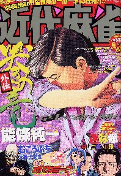
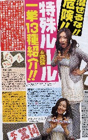

近代麻雀 '06.6.15号

その号に特殊ルール＆古役、一挙13種紹介!!という記事があった。

見ると特殊ルールといっても、“ヤキトリ”とか“アリス”、あるいは“割れ目”、“赤牌”、“ダブロン”など、ごく一般的なものだった。“アリス”は一昔前に流行ったルールで、いまはあまり知られていないかも知れない。しかし“ヤキトリ”とか“ダブロン”、あるいは“赤牌”はあまりにもメジャーなので、“特殊”とまでは言えないような気もした。しかしまぁ、σ(-_-)が興味があったのは「古役」の方。
見ると、そこに紹介されていたのは「三連刻、四連刻、十三不搭、紅孔雀、百万石、大車輪」の６役。思わず「う〜む....」とうなった。古いとか新しいというのは、状況によって異なる。たとえば昨日買った新本でも、今日売ればたしかに古本。しかし常識的に“古書”とは云わん。
その感覚でゆくと、σ(-_-)の中で古役といえば「中国古典麻雀（1920年頃までの中国麻雀）に存在した役」という印象がある。そこで純粋な日本製の役である“紅孔雀”や“百万石”などを古役と云われると大いに違和感がある。
三連刻、四連刻、大車輪にしても完全に日本名（現在の中麻公式ルールでいえば、三連刻＝一色三節高、四連刻＝一色四節高、大車輪＝連七対）。日本では1965（Ｓ40頃）に天野大三氏の本で公表されているが、中国の文献に登場したのは文革が終わった1977年（Ｓ52）以降のこと。
どちらが先に考案したのか、あるいは時代の要請による同時期的な考案なのか、天野氏が亡くなった今となってはハッキリしたことは分からない。しかし少なくとも「中国古典麻雀に存在した役」ではないことはたしか。
そこでこれも“古役”から除外するとすれば、このリストの中で違和感なく“古役”と云えるのは“十三不搭”くらい。
|